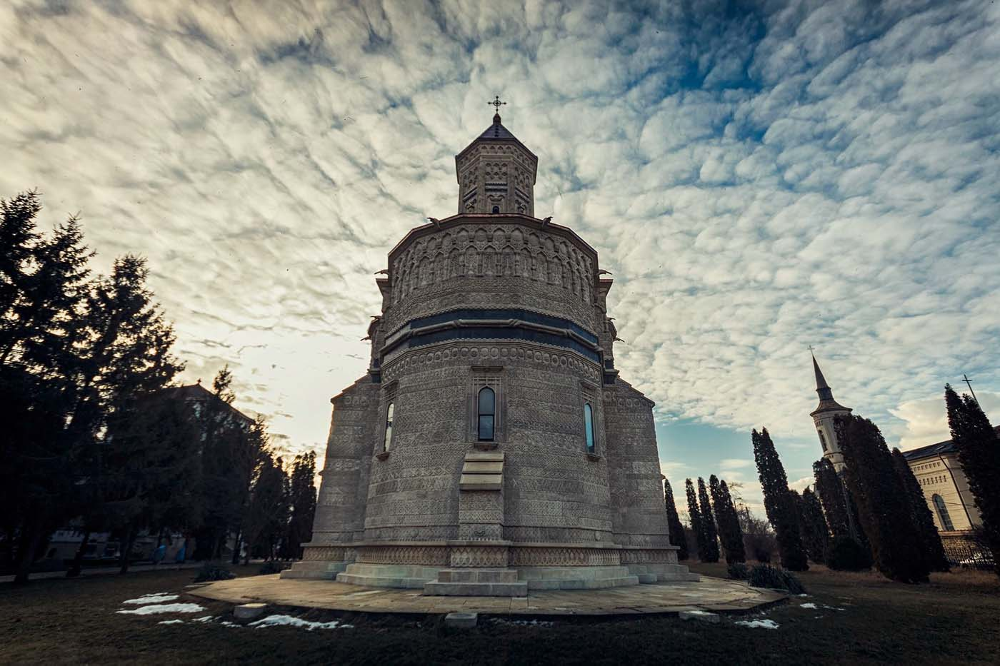
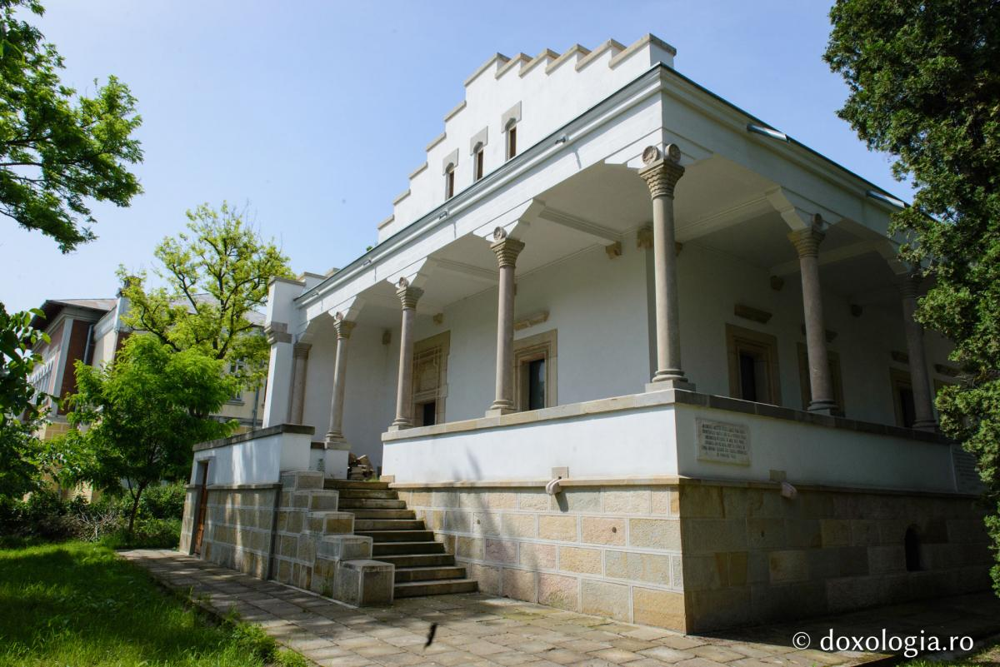

Descriere
Mănăstirea “Sf. Trei Ierarhi” este cea mai frumoasă ctitorie a domnului Tării Moldovei, Vasile Lupu, o adevărată simfonie a artelor în rugăciune, construită între anii 1637-1639. Actuala înfăţisare a mănăstirii este rezultatul lucrărilor de restaurare ale arhitectului Andre Lecomte de Nouy, desfăşurate în perioada 1882 -1904. S-a păstrat structura exterioară datorită căreia mănăstirea este unică în cadrul arhitecturii ecleziastice romaneşti. Ornamentele exterioare, care acoperă edificiul în întregime şi care au fost iniţial aurite, combină elemente turceşti, arabe, georgiene, armene şi persiene cu motive arhitecturale românesti într-o superbă dantelărie în piatra. Pot fi numărate peste 30 de registre de motive decorative, care nu se repetă. In interiorul mănăstirii sunt înhumate mai multe personalități de rang domnesc: Tudosca, prima soţie a lui Vasile Lupu, şi Stefan-Vodă fiul lor; Dimitrie Cantemir, principele cărturar (1710-1711), precum şi Alexandru Ioan Cuza, primul domnitor al Principatelor Unite (1859-1866).
Lângă biserica se află o clădire ce adăposteşte un muzeu de artă religioasă, care cuprinde, printre altele, obiecte legate de istoria mănăstirii Trei Ierarhi. Clădirea este cunoscută şi sub denumirea de Sala gotică . În chiliile de la Trei Ierarhi s-au petrecut evenimente de mare importanță pentru educaţia şi cultura românească. În 1640, aici era instalată prima tipografie din Moldova, unde aveau să fie tipărite Cazania românească a Mitropolitului Varlaam, masivul său tratat despre cele Şapte Taine ale Bisericii, Răspunsul la Catehismul calvinesc, precum şi Pravilă lui Vasile Lupu, prima antologie de legi a Moldovei. În aceiaşi ani, Domnitorul Vasile Lupu a pus bazele Colegiului de la Trei Ierarhi, prima instituţie de învăţământ românesc din Moldova, organizată după modelul Academiei kievene. În 1874, din comisia de examinare a şcolii făcea parte şi marele poet român Mihai Eminescu, care a locuit un timp într-una din chiliile mănăstirii.  Dincolo de scopul principal pentru care a fost construită, Sala Gotică aminteşte de cel puţin două evenimente de prim rang din istoria mănăstirii. Mai întâi, aici s-au desfăşurat, în 1642, dezbaterile teologice pan-ortodoxe care s-au finalizat prin a aprobă Mărturisirea Ortodoxă alcătuită de Petru Movilă, mitropolitul Kievului, eveniment rămas în istorie sub denumirea de Sinodul de la Iaşi. Peste timp, în 1888, paraclisul aflat în Sala gotică, care adăpostea temporar raclă Sf. Cuvioase Paraschiva, a fost martorul celei mai cunoscute şi uimitoare dintre faptele minunate ale sfintei, ale cărei moaşte nu au fost atinse de puternicul incendiu din noaptea de 26 spre 27 decembrie, deşi totul în jur a ars. Dedicat artei şi istoriei bisericeşti din Moldova secolelor XVII-XIX, muzeul Sala gotică se doreşte a fi un edificiu viu, care să contribuie la mai bună cunoaştere a trecutului nostru. Această încercare este subliniată şi de constanta organizare a unor expoziţii temporare, ce constituie rechemări ale vizitatorilor într-un spaţiu în care taină trecutului se deschide, oferindu-i celui ce intră cheia unui viitor în care frumuseţea să salveze lumea.
